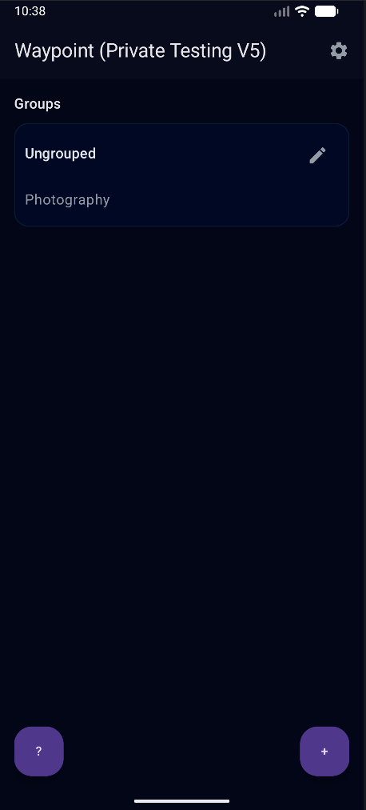
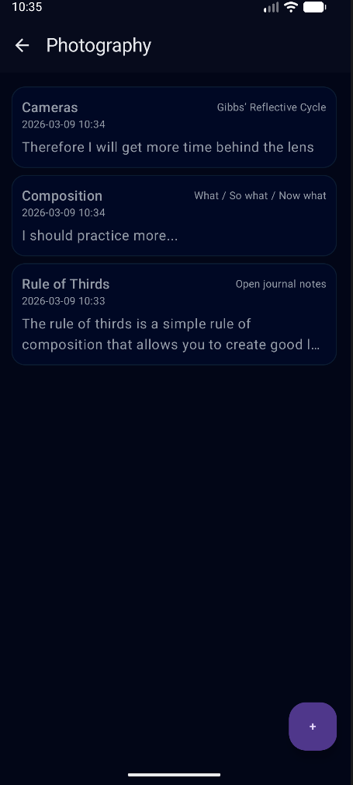
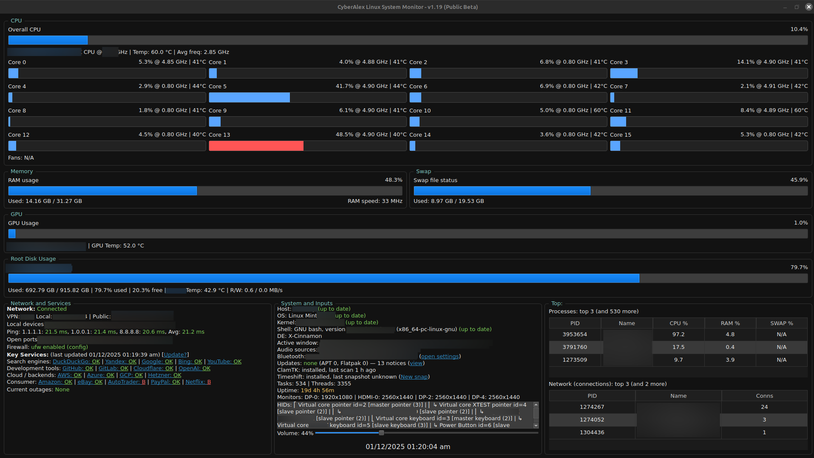

A small collection of software created by Alex. Packages are provided directly by CyberAlex for supported platforms.
Created and Published by Alex (cyberalex.uk) on 9th March 2026
Waypoint is a reflective journalling and structured self-review app for Android. It allows users to create groups, organise themes, and record reflections using methods such as What / So what / Now what, Gibbs’ Reflective Cycle, and open notes. It also includes export and import support, reminder settings, and backup prompts.
This build is a private pre-release intended for limited testing only. It is not a final public release.


This software is provided free of charge for private testing and evaluation only. It remains the copyright property of Alex / CyberAlex. No permission is granted to modify, redistribute, mirror, reverse engineer, repackage, or republish this software without prior written permission. This software is provided on an “as is” basis, without warranty or guarantee of any kind. The author accepts no liability for damage, data loss, malfunction, or any other consequence resulting from installation or use. Use is entirely at your own risk. By downloading or installing this software, you agree to these terms.
On your Android device: 1. Download: https://repository.cyberalex.uk/waypoint-private-preview.apk 2. Verify: SHA-256: bd801c735ae1d4594c902ee810ca2cc391f7f8f17503c9c8ecb3eaed7f016505 3. Open the APK and follow the install prompts. 4. If your device blocks direct installation: allow installation from your browser or file manager for this APK only. Notes: - This is a private testing build. - Existing test builds should be removed first if signature/version conflicts occur.
Created and Published by Alex (cyberalex.uk) on 1st Dec 2025
CyberAlex System Monitor is a modern, dark themed dashboard for Linux that displays CPU, GPU, memory, storage, temperatures, network status, firewall state, Bluetooth devices, Timeshift snapshots, system updates, and more all in one place. Designed for clarity and practicality, it highlights important changes, warns about open ports, and provides one click access to useful tools.

This software is provided free of charge and on an “as is” basis. No warranty is expressed or implied, and the author accepts no liability for any damage, data loss, system issues, or other consequences resulting from installing or using this package. Use is entirely at your own risk. By downloading or installing this software, you agree to these terms.
Terminal: Open Terminal and run each line separately. If checksum fails - abort install. Download: wget https://repository.cyberalex.uk/cyberalex-system-monitor.deb Verify: echo "bbfd882bf9284253a6349a2088327f01b02ab81e1029b609ba605f784cd31734 cyberalex-system-monitor.deb" | sha256sum -c - Install System Monitor: sudo dpkg -i cyberalex-system-monitor.deb Install Dependencies: sudo apt -f install
© CyberAlex Repository.